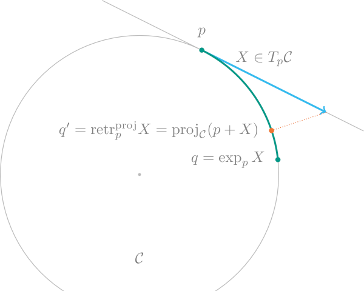

Retractions and inverse Retractions
The exponential and logarithmic map might be too expensive to evaluate or not be available in a very stable numerical way on certain manifolds $\mathcal M$. Retractions provide a possibly cheap, fast and stable alternative.
A retraction $\operatorname{retr}_p: T_p\mathcal M → \mathcal M$ is a smooth map that fulfils (for all $p\in\mathcal M$) that
- $\operatorname{retr}_p(0) = p$
- $D\operatorname{retr}_p(0): T_p\mathcal M \to T_p\mathcal M$ is the identity map,
i.e. $D\operatorname{retr}_p(0)[X]=X$ holds for all $X\in T_p\mathcal M$,
where $D\operatorname{retr}_p$ denotes the differential of the retraction.
A retraction $\operatorname{retr}_p$ can be interpreted as a first order approximation to the exponential map $\exp_p$.
The retraction is called of second order if for all $X$ the curves $c(t) = R_p(tX)$ have a zero acceleration at $t=0$, i.e. $c''(0) = 0$.
The following figure compares the exponential map exp(M, p, X) on the Circle (ℂ) (or Sphere(1) embedded in $ℝ^2$ with one possible retraction, the one based on projections. Note especially that $\operatorname{dist}(p,q)=\lVert X\rVert_p$ while this is not the case for the result $\operatorname{retr}_p(X) = q'$.

Similar to the exponential map the retraction might not be globally invertible, but locally it is. So locally one can define the inverse retraction $\operatorname{retr}_p^{-1}\colon \mathcal M \to T_p\mathcal M$, which can be seen as a first order approximation to the logarithmic map. Within the ManifoldsBase.jl interface the inverse retraction is called inverse_retract.
The general interface looks as follows.
ManifoldsBase.default_inverse_retraction_method — Methoddefault_inverse_retraction_method(M::AbstractManifold)The AbstractInverseRetractionMethod that is used when calling inverse_retract without specifying the inverse retraction method. By default, this is the LogarithmicInverseRetraction.
ManifoldsBase.default_retraction_method — Methoddefault_retraction_method(M::AbstractManifold)The AbstractRetractionMethod that is used when calling retract without specifying the retraction method. By default, this is the ExponentialRetraction.
ManifoldsBase.inverse_retract — Functioninverse_retract(M::AbstractManifold, p, q)
inverse_retract(M::AbstractManifold, p, q, method::AbstractInverseRetractionMethodCompute the inverse retraction, a cheaper, approximate version of the logarithmic map), of points p and q on the AbstractManifold M.
Inverse retraction method can be specified by the last argument, defaulting to default_inverse_retraction_method(M). For available inverse retractions on certain manifolds see the documentation on the corresponding manifold.
See also retract.
ManifoldsBase.inverse_retract! — Functioninverse_retract!(M::AbstractManifold, X, p, q[, method::AbstractInverseRetractionMethod])Compute the inverse retraction, a cheaper, approximate version of the logarithmic map), of points p and q on the AbstractManifold M. Result is saved to X.
Inverse retraction method can be specified by the last argument, defaulting to default_inverse_retraction_method(M). See the documentation of respective manifolds for available methods.
See also retract!.
ManifoldsBase.retract — Functionretract(M::AbstractManifold, p, X, method::AbstractRetractionMethod=default_retraction_method(M))
retract(M::AbstractManifold, p, X, t::Real=1, method::AbstractRetractionMethod=default_retraction_method(M))Compute a retraction, a cheaper, approximate version of the exponential map, from p into direction X, scaled by t, on the AbstractManifold M.
A retraction $\operatorname{retr}_p: T_p\mathcal M → \mathcal M$ is a smooth map that fulfils
- $\operatorname{retr}_p(0) = p$
- $D\operatorname{retr}_p(0): T_p\mathcal M \to T_p\mathcal M$ is the identity map,
i.e. $D\operatorname{retr}_p(0)[X]=X$ holds for all $X\in T_p\mathcal M$,
where $D\operatorname{retr}_p$ denotes the differential of the retraction
The retraction is called of second order if for all $X$ the curves $c(t) = R_p(tX)$ have a zero acceleration at $t=0$, i.e. $c''(0) = 0$.
Retraction method can be specified by the last argument, defaulting to default_retraction_method(M). For further available retractions see the documentation of respective manifolds.
Locally, the retraction is invertible. For the inverse operation, see inverse_retract.
ManifoldsBase.retract! — Functionretract!(M::AbstractManifold, q, p, X)
retract!(M::AbstractManifold, q, p, X, t::Real=1)
retract!(M::AbstractManifold, q, p, X, method::AbstractRetractionMethod)
retract!(M::AbstractManifold, q, p, X, t::Real=1, method::AbstractRetractionMethod)Compute a retraction, a cheaper, approximate version of the exponential map, from p into direction X, scaled by t, on the AbstractManifold manifold M. Result is saved to q.
Retraction method can be specified by the last argument, defaulting to default_retraction_method(M). See the documentation of respective manifolds for available methods.
See retract for more details.
Types of Retractions
To distinguish different types of retractions, the last argument of the retraction as well as its inverse specifies a type. The following ones are available.
ManifoldsBase.AbstractInverseRetractionMethod — TypeAbstractInverseRetractionMethodAbstract type for methods for inverting a retraction (see inverse_retract).
ManifoldsBase.AbstractRetractionMethod — TypeAbstractRetractionMethodAbstract type for methods for retracting a tangent vector to a manifold.
ManifoldsBase.ApproximateInverseRetraction — TypeApproximateInverseRetraction <: AbstractInverseRetractionMethodAn abstract type for representing approximate inverse retraction methods.
ManifoldsBase.ApproximateRetraction — TypeApproximateRetraction <: AbstractInverseRetractionMethodAn abstract type for representing approximate retraction methods.
ManifoldsBase.CayleyInverseRetraction — TypeCayleyInverseRetraction <: AbstractInverseRetractionMethodA retraction based on the Cayley transform, which is realized by using the PadeRetraction{1}.
ManifoldsBase.CayleyRetraction — TypeCayleyRetraction <: AbstractRetractionMethodA retraction based on the Cayley transform, which is realized by using the PadeRetraction{1}.
ManifoldsBase.EmbeddedInverseRetraction — TypeEmbeddedInverseRetraction{T<:AbstractInverseRetractionMethod} <: AbstractInverseRetractionMethod
Compute an inverse retraction by using the inverse retraction of type T in the embedding and projecting the result
Constructor
EmbeddedInverseRetraction(r::AbstractInverseRetractionMethod)Generate the inverse retraction with inverse retraction r to use in the embedding.
ManifoldsBase.EmbeddedRetraction — TypeEmbeddedRetraction{T<:AbstractRetractionMethod} <: AbstractRetractionMethodCompute a retraction by using the retraction of type T in the embedding and projecting the result.
Constructor
EmbeddedRetraction(r::AbstractRetractionMethod)Generate the retraction with retraction r to use in the embedding.
ManifoldsBase.ExponentialRetraction — TypeExponentialRetraction <: AbstractRetractionMethodRetraction using the exponential map.
ManifoldsBase.LogarithmicInverseRetraction — TypeLogarithmicInverseRetraction <: AbstractInverseRetractionMethodInverse retraction using the logarithmic map.
ManifoldsBase.NLSolveInverseRetraction — TypeNLSolveInverseRetraction{T<:AbstractRetractionMethod,TV,TK} <:
ApproximateInverseRetractionAn inverse retraction method for approximating the inverse of a retraction using NLsolve.
Constructor
NLSolveInverseRetraction(
method::AbstractRetractionMethod[, X0];
project_tangent=false,
project_point=false,
nlsolve_kwargs...,
)Constructs an approximate inverse retraction for the retraction method with initial guess X0, defaulting to the zero vector. If project_tangent is true, then the tangent vector is projected before the retraction using project. If project_point is true, then the resulting point is projected after the retraction. nlsolve_kwargs are keyword arguments passed to NLsolve.nlsolve.
ManifoldsBase.ODEExponentialRetraction — TypeODEExponentialRetraction{T<:AbstractRetractionMethod, B<:AbstractBasis} <: AbstractRetractionMethodApproximate the exponential map on the manifold by evaluating the ODE descripting the geodesic at 1, assuming the default connection of the given manifold by solving the ordinary differential equation
\[\frac{d^2}{dt^2} p^k + Γ^k_{ij} \frac{d}{dt} p_i \frac{d}{dt} p_j = 0,\]
where $Γ^k_{ij}$ are the Christoffel symbols of the second kind, and the Einstein summation convention is assumed.
Constructor
ODEExponentialRetraction(
r::AbstractRetractionMethod,
b::AbstractBasis=DefaultOrthogonalBasis(),
)Generate the retraction with a retraction to use internally (for some approaches) and a basis for the tangent space(s).
ManifoldsBase.PadeInverseRetraction — TypePadeInverseRetraction{m} <: AbstractRetractionMethodAn inverse retraction based on the Padé approximation of order $m$ for the retraction.
ManifoldsBase.PadeRetraction — TypePadeRetraction{m} <: AbstractRetractionMethodA retraction based on the Padé approximation of order $m$
ManifoldsBase.PolarInverseRetraction — TypePolarInverseRetraction <: AbstractInverseRetractionMethodInverse retractions that are based on a singular value decomposition of the matrix / matrices for point and tangent vector on a AbstractManifold
ManifoldsBase.PolarRetraction — TypePolarRetraction <: AbstractRetractionMethodRetractions that are based on singular value decompositions of the matrix / matrices for point and tangent vector on a AbstractManifold
ManifoldsBase.ProjectionInverseRetraction — TypeProjectionInverseRetraction <: AbstractInverseRetractionMethodInverse retractions that are based on a projection (or its inversion).
ManifoldsBase.ProjectionRetraction — TypeProjectionRetraction <: AbstractRetractionMethodRetractions that are based on projection and usually addition in the embedding.
ManifoldsBase.QRInverseRetraction — TypeQRInverseRetraction <: AbstractInverseRetractionMethodInverse retractions that are based on a QR decomposition of the matrix / matrices for point and tangent vector on a AbstractManifold
ManifoldsBase.QRRetraction — TypeQRRetraction <: AbstractRetractionMethodRetractions that are based on a QR decomposition of the matrix / matrices for point and tangent vector on a AbstractManifold
ManifoldsBase.SoftmaxInverseRetraction — TypeSoftmaxInverseRetraction <: AbstractInverseRetractionMethodDescribes an inverse retraction that is based on the softmax function.
ManifoldsBase.SoftmaxRetraction — TypeSoftmaxRetraction <: AbstractRetractionMethodDescribes a retraction that is based on the softmax function.
The functions on layer 3
While you should always add your documentation to retract or retract! when implementing new manifolds, the actual implementation happens on the following functions on layer III.
ManifoldsBase.inverse_retract_caley! — Methodinverse_retract_caley!(M::AbstractManifold, X, p, q)computes the mutating variant of the CayleyInverseRetraction, which by default calls the first order [PadeInverseRetraction§(@ref).
ManifoldsBase.inverse_retract_caley — Methodinverse_retract_caley(M::AbstractManifold, p, q)computes the allocating variant of the CayleyInverseRetraction, which by default allocates and calls inverse_retract_caley!.
ManifoldsBase.inverse_retract_embedded! — Methodinverse_retract_embedded!(M::AbstractManifold, X, p, q, m::AbstractInverseRetractionMethod)computes the mutating variant of the EmbeddedInverseRetraction using the AbstractInverseRetractionMethod m in the embedding (see get_embedding) and projecting the result back.
ManifoldsBase.inverse_retract_embedded — Methodinverse_retract_embedded(M::AbstractManifold, p, q, m::AbstractInverseRetractionMethod)computes the allocating variant of the EmbeddedInverseRetraction using the AbstractInverseRetractionMethod m in the embedding (see get_embedding) and projecting the result back.
ManifoldsBase.inverse_retract_nlsolve! — Methodinverse_retract_nlsolve!(M::AbstractManifold, X, p, q, m::NLSolveInverseRetraction)computes the mutating variant of the NLSolveInverseRetraction m.
ManifoldsBase.inverse_retract_nlsolve — Methodinverse_retract_nlsolve(M::AbstractManifold, p, q, m::NLSolveInverseRetraction)computes the allocating variant of the NLSolveInverseRetraction m, which by default allocates and calls inverse_retract_nlsolve!.
ManifoldsBase.inverse_retract_pade! — Methodinverse_retract_pade!(M::AbstractManifold, p, q, n)computes the mutating variant of the PadeInverseRetraction(n),
ManifoldsBase.inverse_retract_pade — Methodinverse_retract_pade(M::AbstractManifold, p, q)computes the allocating variant of the PadeInverseRetraction(n), which by default allocates and calls inverse_retract_pade!.
ManifoldsBase.inverse_retract_polar! — Methodinverse_retract_polar!(M::AbstractManifold, X, p, q)computes the mutating variant of the PolarInverseRetraction.
ManifoldsBase.inverse_retract_polar — Methodinverse_retract_polar(M::AbstractManifold, p, q)computes the allocating variant of the PolarInverseRetraction, which by default allocates and calls inverse_retract_polar!.
ManifoldsBase.inverse_retract_project! — Methodinverse_retract_project!(M::AbstractManifold, X, p, q)computes the mutating variant of the ProjectionInverseRetraction.
ManifoldsBase.inverse_retract_project — Methodinverse_retract_project(M::AbstractManifold, p, q)computes the allocating variant of the ProjectionInverseRetraction, which by default allocates and calls inverse_retract_project!.
ManifoldsBase.inverse_retract_qr! — Methodinverse_retract_qr!(M::AbstractManifold, X, p, q)computes the mutating variant of the QRInverseRetraction.
ManifoldsBase.inverse_retract_qr — Methodinverse_retract_qr(M::AbstractManifold, p, q)computes the allocating variant of the QRInverseRetraction, which by default allocates and calls inverse_retract_qr!.
ManifoldsBase.inverse_retract_softmax! — Methodinverse_retract_softmax!(M::AbstractManifold, X, p, q)computes the mutating variant of the SoftmaxInverseRetraction.
ManifoldsBase.inverse_retract_softmax — Methodinverse_retract_softmax(M::AbstractManifold, p, q)computes the allocating variant of the SoftmaxInverseRetraction, which by default allocates and calls inverse_retract_softmax!.
ManifoldsBase.retract_caley! — Methodretract_caley!(M::AbstractManifold, X, p, q)computes the mutating variant of the CayleyRetraction, which by default falls back to calling the first order PadeRetraction.
ManifoldsBase.retract_caley — Methodretract_caley(M::AbstractManifold, p, q)computes the allocating variant of the CayleyRetraction, which by default allocates and calls retract_caley!.
ManifoldsBase.retract_embedded! — Methodretract_embedded!(M::AbstractManifold, X, p, q, m::AbstractRetractionMethod)computes the mutating variant of the EmbeddedRetraction using the AbstractRetractionMethod m in the embedding (see get_embedding) and projecting the result back.
ManifoldsBase.retract_embedded — Methodretract_embedded(M::AbstractManifold, p, X, m::AbstractRetractionMethod)computes the allocating variant of the EmbeddedRetraction using the AbstractRetractionMethod m in the embedding (see get_embedding) and projecting the result back.
ManifoldsBase.retract_exp_ode! — Methodretract_exp_ode!(M::AbstractManifold, q, p, X, m::AbstractRetractionMethod, B::AbstractBasis)computes the mutating variant of the ODEExponentialRetraction(m, B).
ManifoldsBase.retract_exp_ode — Methodretract_exp_ode(M::AbstractManifold, p, q, m::AbstractRetractionMethod, B::AbstractBasis)computes the allocating variant of the ODEExponentialRetraction(m,B), which by default allocates and calls retract_exp_ode!.
ManifoldsBase.retract_pade! — Methodretract_pade!(M::AbstractManifold, q, p, n)computes the mutating variant of the PadeRetraction(n).
ManifoldsBase.retract_pade — Methodretract_pade(M::AbstractManifold, p, q)computes the allocating variant of the PadeRetraction(n), which by default allocates and calls retract_pade!.
ManifoldsBase.retract_polar! — Methodretract_polar!(M::AbstractManifold, q, p, X)computes the mutating variant of the PolarRetraction.
ManifoldsBase.retract_polar — Methodretract_polar(M::AbstractManifold, p, q)computes the allocating variant of the PolarRetraction, which by default allocates and calls retract_polar!.
ManifoldsBase.retract_project! — Methodretract_project!(M::AbstractManifold, q, p, X)computes the mutating variant of the ProjectionRetraction.
ManifoldsBase.retract_project — Methodretract_project(M::AbstractManifold, p, q)computes the allocating variant of the ProjectionRetraction, which by default allocates and calls retract_project!.
ManifoldsBase.retract_qr! — Methodretract_qr!(M::AbstractManifold, q, p, X)computes the mutating variant of the QRRetraction.
ManifoldsBase.retract_qr — Methodretract_qr(M::AbstractManifold, p, q)computes the allocating variant of the QRRetraction, which by default allocates and calls retract_qr!.
ManifoldsBase.retract_softmax! — Methodretract_softmax!(M::AbstractManifold, q, p, X)computes the mutating variant of the SoftmaxRetraction.
ManifoldsBase.retract_softmax — Methodretract_softmax(M::AbstractManifold, p, q)computes the allocating variant of the SoftmaxRetraction, which by default allocates and calls retract_softmax!.